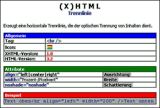

Die Überschrift (hier "Trennlinie") ist zugleich die Bezeichnung des Menüpunktes, unter dem der Dialog für diesen Tag zu finden ist.
Unter der Überschrift steht eine kurze Beschreibung des Tags.
Nun folgen Informationen über den Tag:
- Schreibweise des Tags
- Icon, das auf der Symbolleiste für den Tag verwendet wird
- Angabe der (X)HTML - Version, ab der der Tag offiziell zum » W3C - Standard gehört
- Shortcut, über den der Dialog ebenfalls geöffnet werden kann
Nun werden die Attribute aufgelistet, die die Eigenschaften des Tags steuern. Den meisten Attributen müssen außerdem Werte zugewiesen werden.
Hinter dem jeweiligen Attribut steht mit grauem Hintergrund die Beschriftung, mit der Sie das Attribut im zugehörigen Dialog wiederfinden.
Zum Schlufl folgt ein Beispiel, das die Verwendung des Tags demonstriert. Das Beispiel kann in die Zwischenablage kopiert und in ein Dokument eingefügt werden.